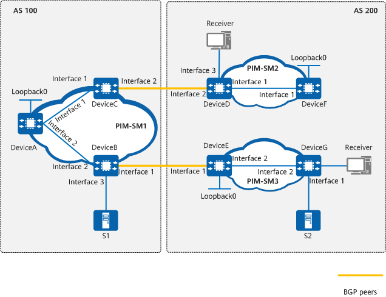

Example for Configuring Static RPF Peers to Implement Inter-AS Multicast
Networking Requirements
Two ASs exist on the network shown in Figure 1. Each AS contains at least one PIM-SM domain, and each PIM-SM domain may contain one multicast source and receiver, or none at all. It is required that the receiver in domain PIM-SM2 be capable of receiving multicast data sent by both S1 in domain PIM-SM1 and S2 in domain PIM-SM3 without changing the unicast topology.

In this example, interface1, interface2, and interface3 represent 10GE0/0/1, 10GE0/0/2, and 10GE0/0/3, respectively.

Device |
Interface |
IP Address |
|---|---|---|
DeviceA |
10GE0/0/1 |
192.168.1.1/24 |
10GE0/0/2 |
192.168.4.1/24 |
|
Loopback0 |
1.1.1.1/32 |
|
DeviceB |
10GE0/0/1 |
192.168.5.2/24 |
10GE0/0/2 |
192.168.4.2/24 |
|
10GE0/0/3 |
10.110.1.1/24 |
|
DeviceC |
10GE0/0/1 |
192.168.1.2/24 |
10GE0/0/2 |
192.168.2.2/24 |
|
DeviceD |
10GE0/0/1 |
192.168.3.1/24 |
10GE0/0/2 |
192.168.2.1/24 |
|
10GE0/0/3 |
10.110.2.1/24 |
|
DeviceE |
10GE0/0/1 |
192.168.5.1/24 |
10GE0/0/2 |
192.168.6.1/24 |
|
Loopback0 |
3.3.3.3/32 |
|
DeviceF |
10GE0/0/1 |
192.168.3.2/24 |
Loopback0 |
2.2.2.2/32 |
|
DeviceG |
10GE0/0/1 |
10.110.3.1/24 |
10GE0/0/2 |
192.168.6.2/24 |
|
10GE0/0/3 |
10.110.4.1/24 |
Precautions
Incorrect configurations of static RPF peers may lead to SA message looping. As such, exercise caution when configuring static RPF peers.
Configuration Roadmap
Set up MSDP peer relationships between RPs in PIM-SM domains. After static RPF peers are set up between MSDP peers, RPF check does not need to be performed for SA messages sent from the static RPF peers. As such, inter-AS multicast source information can be shared without changing the unicast topology.
Enable the multicast function and configure interface IP addresses on devices. Configure OSPF in each AS and configure EBGP between them. Configure BGP and OSPF to import routes from each another.
Enable PIM-SM on each interface. Configure Loopback0 as both a C-BSR and a C-RP: Loopback0 interfaces on DeviceA, DeviceF, and DeviceE function as the C-BSRs and the C-RPs for the PIM-SM domains where they reside.
Set up MSDP peer relationships between RPs in PIM-SM domains. Establish an MSDP peer relationship between DeviceA and DeviceF, and between DeviceA and DeviceE.
Specify static RPF peers for MSDP peers. Specify DeviceE and DeviceF as static RPF peers of DeviceA, and specify DeviceA as the only static RPF peer for DeviceE and DeviceF.
Procedure
- Enable the multicast function, assign an IP address to each interface, and configure OSPF as a unicast routing protocol for interworking in each AS.
# Configure DeviceC. The configurations of other devices are similar to the configuration of DeviceC. For detailed configurations, see Configuration Scripts.
<HUAWEI> system-view [HUAWEI] sysname DeviceC [DeviceC] multicast routing-enable [DeviceC] interface 10ge 0/0/2 [DeviceC-10GE0/0/2] ip address 192.168.2.2 24 [DeviceC-10GE0/0/2] quit [DeviceC] interface 10ge 0/0/1 [DeviceC-10GE0/0/1] ip address 192.168.1.2 24 [DeviceC-10GE0/0/1] quit [DeviceC] ospf 1 [DeviceC-ospf-1] area 0.0.0.0 [DeviceC-ospf-1-area-0.0.0.0] network 192.168.1.0 0.0.0.255 [DeviceC-ospf-1-area-0.0.0.0] network 192.168.2.0 0.0.0.255 [DeviceC-ospf-1-area-0.0.0.0] quit [DeviceC-ospf-1] quit
- Enable PIM-SM on each interface.
# Enable PIM-SM on each involved interface of DeviceA. The configurations of other devices are similar to the configuration of DeviceA. For detailed configurations, see Configuration Scripts.
[DeviceA] interface 10ge 0/0/1 [DeviceA-10GE0/0/1] pim sm [DeviceA-10GE0/0/1] quit [DeviceA] interface 10ge 0/0/2 [DeviceA-10GE0/0/2] pim sm [DeviceA-10GE0/0/2] quit
# Configure a BSR boundary on 10GE0/0/1 of DeviceB, 10GE0/0/2 of DeviceC, 10GE0/0/2 of DeviceD, and 10GE0/0/1 of DeviceE. The configurations of DeviceC, DeviceD, and DeviceE are similar to the configuration of DeviceB. For detailed configurations, see Configuration Scripts.
[DeviceB] interface 10ge 0/0/1 [DeviceB-10GE0/0/1] pim bsr-boundary [DeviceB-10GE0/0/1] quit
- Enable IGMP on the interface connecting to the host.
[DeviceD] interface 10ge 0/0/3 [DeviceD-10GE0/0/3] igmp enable [DeviceD-10GE0/0/3] quit [DeviceG] interface 10ge 0/0/3 [DeviceG-10GE0/0/3] igmp enable [DeviceG-10GE0/0/3] quit
- Configure Loopback0 as both a C-BSR and a C-RP.
# Create Loopback0 and configure it as both a C-BSR and a C-RP on DeviceA, DeviceF, and DeviceE. The configurations of DeviceF and DeviceE are similar to the configuration of DeviceA. For detailed configurations, see Configuration Scripts.
[DeviceA] interface loopback 0 [DeviceA-LoopBack0] ip address 1.1.1.1 255.255.255.255 [DeviceA-LoopBack0] pim sm [DeviceA-LoopBack0] quit [DeviceA] pim [DeviceA-pim] c-bsr loopback 0 [DeviceA-pim] c-rp loopback 0 [DeviceA-pim] quit
- Configure static RPF peers.
# Configure DeviceF and DeviceE as static RPF peers of DeviceA.
[DeviceA] ip ip-prefix list-df permit 192.168.0.0 16 greater-equal 16 less-equal 32 [DeviceA] msdp [DeviceA-msdp] peer 192.168.3.2 connect-interface 10ge 0/0/1 [DeviceA-msdp] peer 192.168.5.1 connect-interface 10ge 0/0/1 [DeviceA-msdp] static-rpf-peer 192.168.3.2 rp-policy list-df [DeviceA-msdp] static-rpf-peer 192.168.5.1 rp-policy list-df [DeviceA-msdp] quit
# Configure DeviceA as the static RPF peer of DeviceF and DeviceE. The configuration of DeviceE is similar to that of DeviceF. For detailed configuration, see Configuration Scripts.
[DeviceF] ip ip-prefix list-c permit 192.168.0.0 16 greater-equal 16 less-equal 32 [DeviceF] msdp [DeviceF-msdp] peer 192.168.1.1 connect-interface 10ge 0/0/1 [DeviceF-msdp] static-rpf-peer 192.168.1.1 rp-policy list-c [DeviceF-msdp] quit
Verifying the Configuration
# Run the display bgp peer command to check BGP peer relationships established between devices. No information is displayed on DeviceA, indicating that no BGP peer relationship is established between DeviceA and DeviceE or between DeviceA and DeviceF.
# Run the display msdp brief command to check MSDP peer relationships established between devices. When multicast source S1 in the domain PIM-SM1 sends multicast information, receivers in domains PIM-SM2 and PIM-SM3 can receive it. The MSDP peer information on DeviceA, DeviceF, and DeviceE is displayed as follows:
[DeviceA] display msdp brief MSDP Peer Brief Information of : public net Configured Up Listen Connect Shutdown Down 2 2 0 0 0 0 Peer's Address State Up/Down time AS SA Count Reset Count 192.168.3.2 Up 01:07:08 ? 8 0 192.168.5.1 Up 00:16:39 ? 13 0 [DeviceF] display msdp brief MSDP Peer Brief Information of : public net Configured Up Listen Connect Shutdown Down 1 1 0 0 0 0 Peer's Address State Up/Down time AS SA Count Reset Count 192.168.1.1 Up 01:07:09 ? 8 0 [DeviceE] display msdp brief MSDP Peer Brief Information of : public net Configured Up Listen Connect Shutdown Down 1 1 0 0 0 0 Peer's Address State Up/Down time AS SA Count Reset Count 192.168.4.1 Up 00:16:40 ? 13 0
Configuration Scripts
DeviceA
# sysname DeviceA # multicast routing-enable # ip ip-prefix list-df index 10 permit 192.168.0.0 16 greater-equal 16 less-equal 32 # interface 10GE0/0/1 ip address 192.168.1.1 255.255.255.0 pim sm # interface 10GE0/0/2 ip address 192.168.4.1 255.255.255.0 pim sm # interface LoopBack0 ip address 1.1.1.1 255.255.255.255 pim sm # pim c-bsr LoopBack0 c-rp LoopBack0 # ospf 1 area 0.0.0.0 network 192.168.1.0 0.0.0.255 network 192.168.4.0 0.0.0.255 network 1.1.1.1 0.0.0.0 # msdp peer 192.168.3.2 connect-interface 10GE0/0/1 peer 192.168.5.1 connect-interface 10GE0/0/1 static-rpf-peer 192.168.3.2 rp-policy list-df static-rpf-peer 192.168.5.1 rp-policy list-df # return
DeviceB
# sysname DeviceB # multicast routing-enable # interface 10GE0/0/1 ip address 10.110.1.1 255.255.255.0 pim sm # interface 10GE0/0/2 ip address 192.168.4.2 255.255.255.0 pim sm # interface 10GE0/0/3 ip address 192.168.5.2 255.255.255.0 pim bsr-boundary pim sm # bgp 100 router-id 10.1.1.3 peer 192.168.5.1 as-number 200 # ipv4-family unicast import-route ospf 1 peer 192.168.5.1 enable # ospf 1 import-route bgp area 0.0.0.0 network 10.110.1.0 0.0.0.255 network 192.168.4.0 0.0.0.255 network 192.168.5.0 0.0.0.255 # return
DeviceC
# sysname DeviceC # multicast routing-enable # interface 10GE0/0/1 ip address 192.168.1.2 255.255.255.0 pim sm # interface 10GE0/0/2 ip address 192.168.2.2 255.255.255.0 pim bsr-boundary pim sm # bgp 100 router-id 10.1.1.2 peer 192.168.2.1 as-number 200 # ipv4-family unicast import-route ospf 1 peer 192.168.2.1 enable # ospf 1 import-route bgp area 0.0.0.0 network 192.168.1.0 0.0.0.255 network 192.168.2.0 0.0.0.255 # return
DeviceD
# sysname DeviceD # multicast routing-enable # interface 10GE0/0/3 ip address 10.110.2.1 255.255.255.0 pim sm igmp enable # interface 10GE0/0/2 ip address 192.168.2.1 255.255.255.0 pim bsr-boundary pim sm # interface 10GE0/0/1 ip address 192.168.3.1 255.255.255.0 pim sm # bgp 200 router-id 10.2.2.1 peer 192.168.2.2 as-number 100 # ipv4-family unicast import-route ospf 1 peer 192.168.2.2 enable # ospf 1 import-route bgp area 0.0.0.0 network 10.110.2.0 0.0.0.255 network 192.168.2.0 0.0.0.255 network 192.168.3.0 0.0.0.255 # return
DeviceE
# sysname DeviceE # multicast routing-enable # ip ip-prefix list-c index 10 permit 192.168.0.0 16 greater-equal 16 less-equal 32 # interface 10GE0/0/1 ip address 192.168.5.1 255.255.255.0 pim sm # interface LoopBack0 ip address 3.3.3.3 255.255.255.255 pim sm # pim c-bsr LoopBack0 c-rp LoopBack0 # ospf 1 area 0.0.0.0 network 192.168.5.0 0.0.0.255 network 3.3.3.3 0.0.0.0 # msdp peer 192.168.4.1 connect-interface 10GE 0/0/2 static-rpf-peer 192.168.4.1 rp-policy list-c # return
DeviceF
# sysname DeviceF # multicast routing-enable # ip ip-prefix list-c index 10 permit 192.168.0.0 16 greater-equal 16 less-equal 32 # interface 10GE0/0/1 ip address 192.168.3.2 255.255.255.0 pim sm # interface LoopBack0 ip address 2.2.2.2 255.255.255.255 pim sm # pim c-bsr LoopBack0 c-rp LoopBack0 # ospf 1 area 0.0.0.0 network 192.168.3.0 0.0.0.255 network 2.2.2.2 0.0.0.0 # msdp peer 192.168.1.1 connect-interface 10GE0/0/1 static-rpf-peer 192.168.1.1 rp-policy list-c # return
DeviceG
# sysname DeviceG # multicast routing-enable # interface 10GE0/0/1 ip address 10.110.3.1 255.255.255.0 pim sm # interface 10GE0/0/3 ip address 10.110.4.1 255.255.255.0 pim sm igmp enable # interface 10GE0/0/2 ip address 192.168.6.2 255.255.255.0 pim sm # ospf 1 area 0.0.0.0 network 10.110.3.0 0.0.0.255 network 10.110.4.0 0.0.0.255 network 192.168.6.0 0.0.0.255 # return